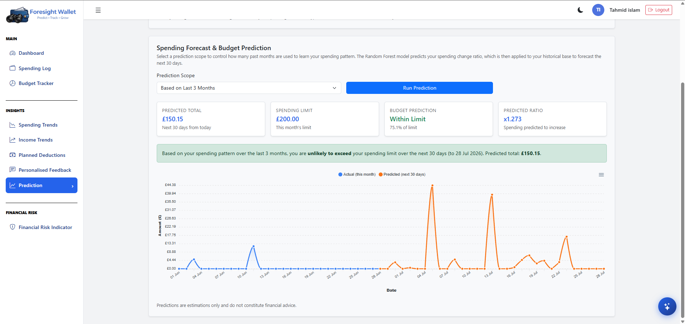

Tahmid Islam
Data Analytics & IT Consultant
A Computer Science graduate from City, University of London with hands-on experience in full-stack development, machine learning, and IT support. Building data-driven solutions with Python and Flask.
Featured Projects
ForesightWallet
A predictive personal finance web app built with Flask and MongoDB. Features Google OAuth, spending and income trend charts, a Random Forest spending forecast, K-Means user clustering (Saver / Balanced / Leisure-Heavy), a financial risk score out of 100, and WalletWise — an AI chatbot powered by the Gemini API. Deployed on Render.
Technologies Used: Python (Flask, scikit-learn, pandas), MongoDB, Gemini API, ApexCharts, HTML/CSS/JS
